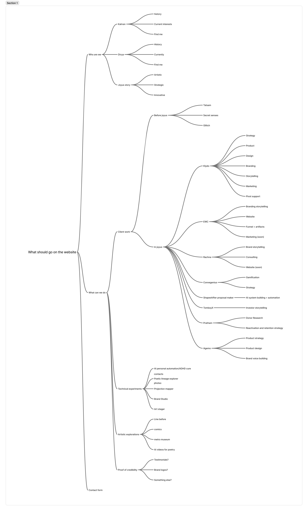
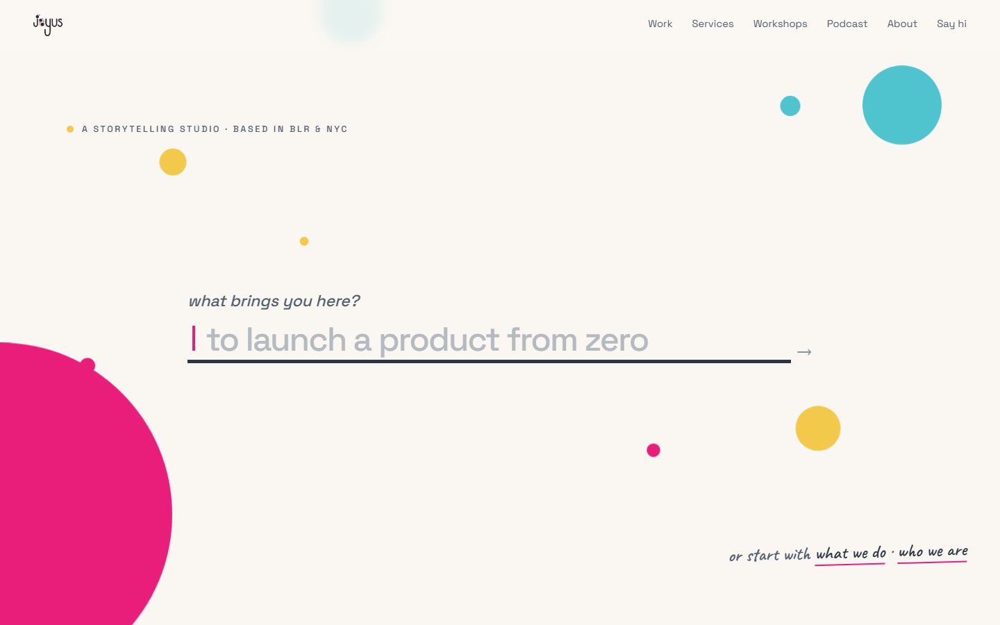
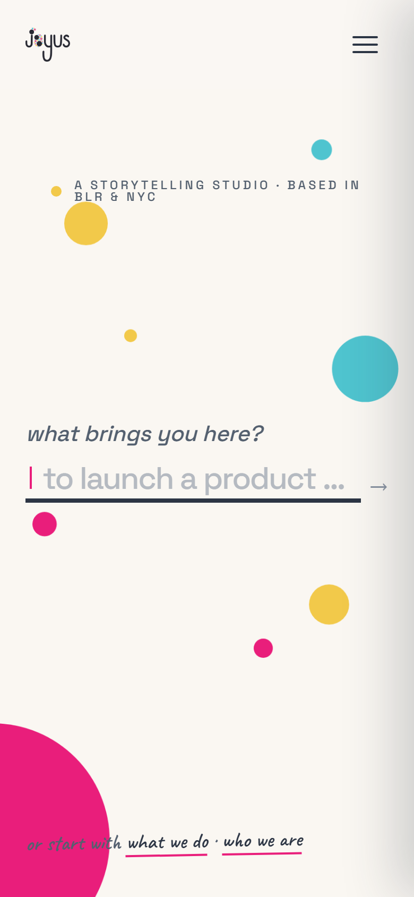
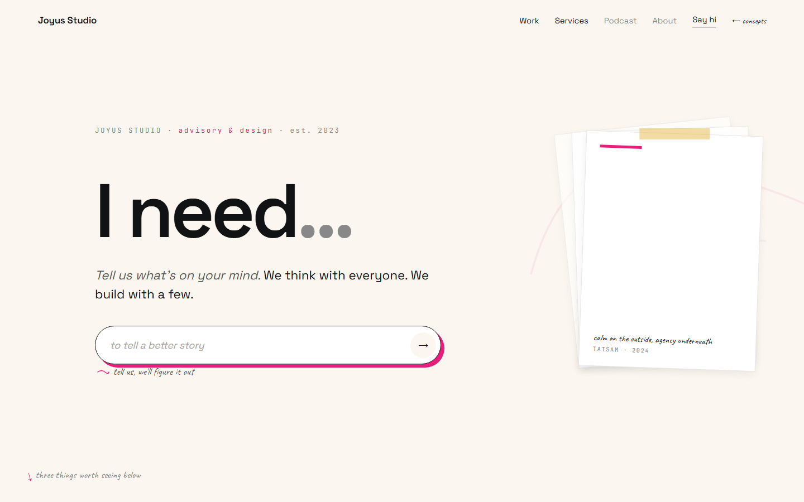
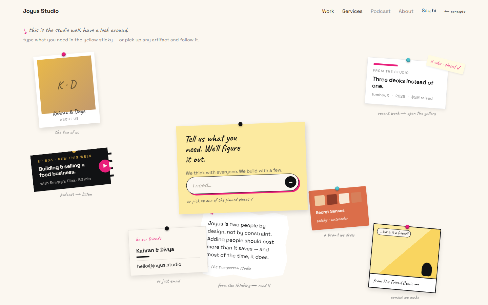
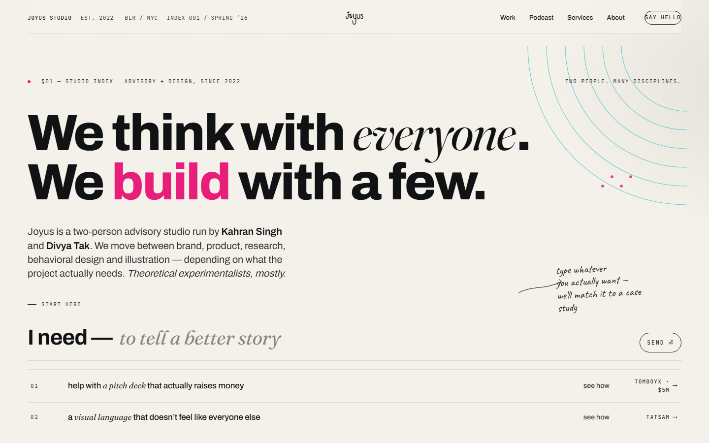
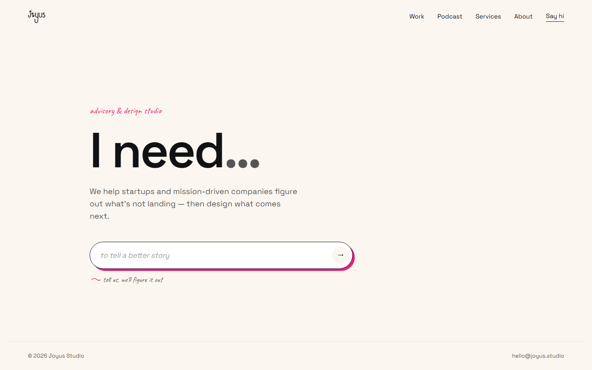

Study 01 · 22 September 2026 · written up 1 October
Where we started
The baseline for the homepage rebuild: what Divya asked for, the map she drew, the homepage as it stands, and what has been tried before. Nothing on this page is a decision beyond what Divya said.
The brief, in Divya's words
Hi, what I'm thinking is I want a website change. I don't think our current website really reflects who we are but I don't want to directly deploy it so let's start working on a branch.
For the core website I want, at the top, a name and some description of what we do. Almost before the fold itself I want there to be these big buttons or whatever that say: Brand and Identity · Website and Product Strategy · Storytelling. Right now we have those sections.
I want you to see the projects that we have currently and I want you to pick one item in each. I'll like the screenshot that is attached, which has what work we did for each client. Certain clients might be there 4 or 5 times.
Imagine that we have all of these options and then there is one image and that's from Tomboy X. It can have strategy and story but those can have a deeper description, like investor storytelling. It still falls under story, right?
There are these tabs at the top: one option, one image on the left, some one-line description, and some tabs under it.
We have: the intro section; this section; the next section can be Who We Have Worked With and it can have just a bunch of logos; a newsletter that posts at whatever frequency, like quarterly, where we share all of the interesting things that we have up to.
One of the tags, not the tab at the top. I feel like one tab should be Experimental and then we can have some tags that say client work, personal exploration, artistic project, or stuff like that as well.
Divya, 22 September 2026, 16:42 IST. Dictated; trimmed only where she asked "does that make sense?"
Also what I want is for you to tell me from this what you understand. I don't want you to make it. We're going to start with just a wireframe… It doesn't have to have the content in it, just something which is there.
But I do want you to also have a design wireframe and we should have content, like a document that says, "Okay we need this content, and this content, and this content." First we start with wireframes. Also you can have this in sort of historical layers of how work is done. If you see in Everything Bazaar, I've just recently made this file, which is basically a historical account of everything chronologically.
Divya, same message, two follow-ups
What that sets
- Process. A branch, no deploy. Understanding first, then a wireframe, then a content document. No design yet.
- Page. Four parts: intro (name + what we do), the work section, logos, newsletter.
- Work section. Coarse options at the top; one image, a line, and tags underneath. One pick per option.
- Two axes. Options are broad (Storytelling); tags are the specific (investor storytelling, client work, personal exploration, artistic project).
- Experimental is an option of its own.
- Historical layers, after Everything Bazaar: offered as an idea, not placed.
The map she attached
"What should go on the website." Three branches: who we are, what we can do, contact. Under client work, each client splits into the separate pieces of work Joyus did for them: Klydo into seven, EWC into four. This is the source for the 37 pieces in Study 02.

The homepage today
A sparse stage with one input. The visitor types what they want; the box suggests matches from 151 hand- and transcript-written intents; pressing Enter with a strong match (score ≥ 4) jumps straight to that page, and anything weaker lands on looking.html with near-misses. No work is visible until someone types. Last changed 6 July 2026 (Kahran, audit fixes); the lead line became "what brings you here?" on 4 June.


Live file: index.html (opens the real page; typing in it logs to Firestore). Title: "Joyus Studio — Stories, Strategy, Serious Play". Logic in intent-box.js.
What was tried before
Four homepage concepts from 17 April 2026, Divya's, last touched 28 May. None shipped. All four keep the "type what you need" input at the centre; they differ in what sits around it. Shown here because the rebuild is the first direction that drops the input.




What already sits in the repo and bears on this
POSITIONING-2026-07-20-moments.md | "Do NOT organize by service ("Branding / Strategy / Fundraising") — that's a menu; makes us a vendor." Also rules out organising by audience and by moment. The brief's options are services. This is a live tension, not a reason to stop; it is open question 1 in Study 02. |
WEBSITE-DIRECTION.md | "Projects that'll haunt you until they're made" as the line a visitor meets first. A candidate for the intro's description. |
CLAUDE.md · positioning | "We think with everyone. We build with a few." Homepage tagline "Advisory & Design Studio." |
work/ | Case studies for 11 clients; only agemo and rachna-nivas are in the sitemap. The map's pieces mostly have no page of their own yet. |
Open at the start
- Which one piece leads each option open
- Whether "historical layers" lives on the homepage or somewhere else open
- What happens to the intent box and
looking.htmlopen - Newsletter: name, platform open · frequency, quarterly said